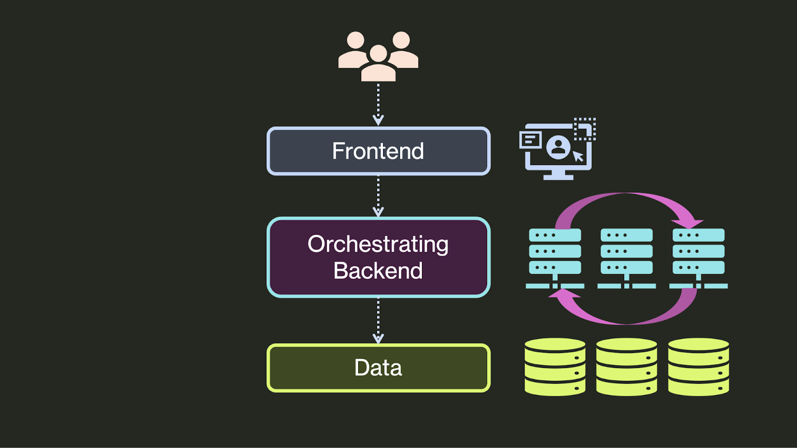
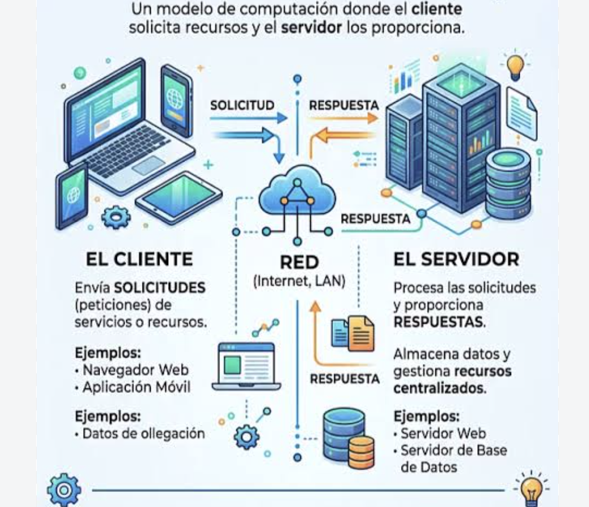

UD1. Del código a producción. ¿Qué significa que una aplicación sea segura?
- Arquitectura y comunicación Cliente-servidor. Servidores y entornos de ejecución. HTTP y HTTPS. APIs REST. JSON. Arquitectura por capas.
- El ecosistema de una aplicación Componentes. Dependencias. Entornos de desarrollo, pruebas y producción.
- Primera aproximación a la seguridad Entradas externas. Superficie de ataque. Seguridad desde el diseño.
- Nuevas aplicaciones Aplicaciones integradas con LLM. Nuevos componentes y superficie de ataque.
¿Qué ocurre desde que escribimos código hasta que un usuario utiliza una aplicación?
📚 1. Aplicaciones modernas
Una aplicación o app es un programa informático diseñado para ayudar al usuario a realizar una tarea específica.
Una aplicación moderna combina muchas piezas para ofrecer una experiencia rápida y conectada en cualquier dispositivo:
- Frontend: Es la interfaz visual con la que interactúa el usuario en su pantalla. Se diseña para navegadores web o teléfonos móviles.
- Backend: Es el servidor que procesa las reglas del negocio, la seguridad y las peticiones del usuario de forma oculta.
- Base de datos: Es el sistema seguro donde se guarda toda la información, como perfiles de usuarios, textos o imágenes.
- APIs: Funcionan como un puente de comunicación para que el frontend, el backend y otros servicios externos compartan datos al instante.
Los productos finales los podemos encontrar como aplicaciones web o móviles, por ejemplo.

¿Qué parte tenemos que proteger?
Todas
💻 2. Del código fuente a la ejecución
El código fuente es lo que escribe el desarrollador, por ejemplo:
function login(user, password) {
// ...
}Pero una aplicación no termina aquí. Tenemos:
Código fuente -> Transformación (dependiendo del lenguaje) -> Ejecución -> Aplicación
Lenguajes compilados e interpretados
Lenguajes Compilados
Código fuente → Compilador → Programa ejecutable → Ejecución
Ejemplos: C, C++, Rust, Java (con matices), Kotlin (con matices)
Lenguajes Interpretados
Código fuente → Runtime → Ejecución
JavaScript → Node.js (lado del servidor), navegador web (lado del cliente)
Python → Python runtime
Por ejemplo si JavaScript se puede ejecutar en el lado del servidor o en el navegador web y esto es fundamental tenerlo en cuenta para posteriormente ver cosas como:
- Vulnerabilidades
- Dependencias
- Configuración
- Contenedores
- Servidores…
🍢 Seguridad de lenguajes y runtimes
No todos los lenguajes tienen las mismas características de seguridad
Por ejemplo, en la gestión de memoria, algunos lenguajes permiten trabajar directamente con memoria y otros la gestionan automáticamente.
C/C++: + control ⇒ + responsabilidad.
JS/Python/Java: Gestión automática de la memoria.
Esto no quiere decir que “JavaScript sea seguro”. Un lenguaje puede reducir determinados tipos de errores, pero ninguna tecnologían convierte automáticamente una aplicación en segura.
Por ejemplo, una aplicación JavaScript puede tener:
- XSS (Cross-Site Scripting) es una vulnerabilidad de seguridad informática que permite a un atacante inyectar código malicioso (generalmente JS) en una página web legítima para que se ejecute en el navegador de otros usuarios.
- Problemas de autenticación
- Exposición de secretos
- Dependencias vulnerables
📟 3. Arquitectura y comunicación
Arquitectura cliente-servidor

El Cliente: Es la aplicación o dispositivo del usuario (como un navegador web o una app en el móvil) que inicia la comunicación haciendo peticiones.
El Servidor: Es el equipo o programa remoto con mayores recursos encargado de procesar las solicitudes, gestionar bases de datos y devolver los datos requeridos.
Cómo Funciona
- El usuario interactúa con el cliente y realiza una acción o petición (por ejemplo, entrar a una página web).
- El cliente envía un mensaje a través de la red usando protocolos como HTTP o HTTPS.
- El servidor recibe la petición, hace el trabajo pesado (busca en la base de datos, procesa los datos) y genera una respuesta.
- El servidor envía la información de vuelta al cliente, que se encarga de mostrarla de forma visual en la pantalla.
HTTP y HTTPS
La diferencia principal entre HTTP y HTTPS es que el segundo cuenta con una capa de seguridad y cifrado para proteger los datos, mientras que el primero los transmite de forma abierta.
¿Qué es HTTP?
Significa Hypertext Transfer Protocol (Protocolo de Transferencia de Hipertexto).
Envía la información en texto plano entre el navegador y el servidor.
No ofrece cifrado, por lo que terceros pueden leer o robar los datos fácilmente si los interceptan.
¿Qué es HTTPS?
Significa Hypertext Transfer Protocol Secure (Protocolo de Transferencia de Hipertexto Seguro).
Añade los protocolos de seguridad SSL o TLS para cifrar los datos intercambiados.
Protege la información confidencial, como contraseñas o números de tarjetas de crédito.
Valida la identidad del servidor web para evitar suplantaciones.
HTTPS protege la comunicación pero NO GARANTIZA que la aplicación sea segura.
APIs REST
Un API REST es un conjunto de reglas que permite que diferentes aplicaciones se comuniquen entre sí mediante HTTP/HTTPS.
El acrónimo significa Application Programming Interface (Interfaz de programación de aplicaciones) y REpresentational State Transfer (Transferencia de estado representacional).
Funciona como un puente o traductor para que un sistema pida datos o funciones a otro y obtenga una respuesta clara.
¿Cómo funciona?
Una API REST funciona mediante un modelo de cliente y servidor:
- El cliente: Es quien hace la petición, como una aplicación móvil, una página web o tu navegador.
- El servidor: Es el sistema que recibe la petición, procesa la información en el backend (como buscar en una base de datos) y devuelve un resultado.
Los datos se suelen enviar y recibir en formato , que es un formato de texto ligero.
### Request/response
Request (Solicitud / Petición): Es el mensaje que envía el cliente (por ejemplo, tu navegador web) pidiendo un recurso, datos o una acción al servidor. Incluye métodos como GET o POST, cabeceras y datos.
Response: Es el mensaje que el servidor devuelve al cliente tras procesar la solicitud. Incluye un código de estado (como 200 para éxito o 404 para no encontrado) y la información solicitada.
Métodos y códigos básicos
Métodos HTTP básicos (Acciones)
Los métodos indican al servidor qué acción se desea realizar sobre un recurso.
• GET: Solicita datos o información de un servidor. No modifica nada en el servidor, solo lee (por ejemplo, cargar una página web o ver un perfil). • POST: Envía datos al servidor para crear un nuevo recurso (por ejemplo, registrar un nuevo usuario o publicar un comentario). • PUT: Envía datos para actualizar por completo un recurso existente. Si no existe, a veces lo crea. • DELETE: Solicita la eliminación de un recurso específico en el servidor. • PATCH: Aplica modificaciones parciales a un recurso (a diferencia de PUT, no lo reemplaza entero).
Códigos de estado HTTP básicos (Respuestas)
Los códigos son números de tres dígitos que el servidor devuelve para indicar el resultado de la petición.
Se dividen en grupos según su primer dígito:
🟢 2xx: Éxito (Todo salió bien) • 200 OK: La petición fue exitosa y el servidor devuelve los datos solicitados. • 201 Created: La petición fue exitosa y se ha creado un nuevo recurso (común tras un POST).
🟡 3xx: Redirección (Hay que ir a otro lado) • 301 Moved Permanently: El recurso solicitado se ha mudado de forma permanente a una nueva dirección (URL). • 302 Found: El recurso está temporalmente en otra dirección.
🔴 4xx: Errores del Cliente (El error está en tu petición) • 400 Bad Request: El servidor no entiende la petición porque está mal redactada o corrupta. • 401 Unauthorized: No tienes permiso para ver el recurso; necesitas iniciar sesión. • 403 Forbidden: El servidor entiende quién eres, pero tienes prohibido el acceso a ese recurso. • 404 Not Found: El recurso solicitado no existe o no se pudo encontrar en el servidor.
🟣 5xx: Errores del Servidor (El error es de la web/sistema) • 500 Internal Server Error: El servidor encontró una condición inesperada que le impide cumplir con la petición (un fallo genérico en el código del servidor). • 503 Service Unavailable: El servidor no está disponible temporalmente, generalmente por mantenimiento o sobrecarga.
JSON
JSON (JavaScript Object Notation) es técnicamente un formato ligero de intercambio de datos basado en texto plano, diseñado para ser fácil de leer y escribir por humanos, y fácil de interpretar y generar por computadoras.
A pesar de que su nombre incluye “JavaScript” y nació como una simplificación de la sintaxis de objetos de ese lenguaje, hoy en día es un estándar completamente independiente del lenguaje y es compatible con prácticamente cualquier tecnología (Python, Java, PHP, C++, etc.).
Estructura técnica
Un archivo o cadena JSON está compuesto exclusivamente por dos estructuras de datos universales:
- Colecciones de pares clave/valor: En la mayoría de los lenguajes, esto se traduce como un objeto, diccionario, hash table o registro.
- Listas ordenadas de valores: En los lenguajes de programación, esto se traduce como un arreglo (array), lista o vector.
Ejemplo
{
"usuario_id": 10543,
"nombre": "Elena",
"es_administrador": false,
"telefonos": [
"+34 600 000 000",
"+34 910 000 000"
],
"configuracion": {
"tema": "oscuro",
"notificaciones": true
},
"ultimo_acceso": null
}Los datos que llegan desde fuera no son confiables